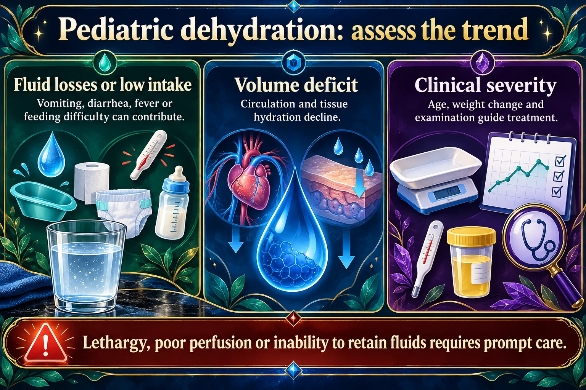

Gastrointestinal
Exam 4 — Musculoskeletal, endocrine, GIWeek 12NUR 235 · MODULE 12 · PLAY & PRACTICE
🔎 Tummy Trouble Detective
24 matching prompts, 10 case questions and 4 visual exercises. Four pairs at a time, with saved practice.
Play this module →
Lethargy, poor perfusion or inability to retain fluids requires prompt care.
Read the picture
Fluid losses or low intake
Vomiting, diarrhea, fever or feeding difficulty can contribute.
Volume deficit
Circulation and tissue hydration decline.
Clinical severity
Age, weight change and examination guide treatment.
Assess
Behavior, mucous membranes, tears, capillary refill, urine output and weight when available.
Replace appropriately
Oral rehydration or IV treatment depends on severity and ability to drink.
Reassess
Track intake, losses, perfusion and clinical improvement.
💡 The one idea
Dehydration is the pediatric emergency behind most GI illness. Children have a higher proportion of body water and lose it faster. Weight change is the most accurate measure of fluid loss in a child.
| Sign | Mild | Moderate | Severe |
|---|---|---|---|
| Weight loss | 3–5% | 6–9% | ≥10% |
| Mucous membranes | Slightly dry | Dry | Parched, no tears |
| Cap refill | <2 s | 2–3 s | >3 s |
| Urine | Slightly down | Reduced, dark | Minimal / none |
| Behavior | Normal / thirsty | Irritable | Lethargic, sunken fontanelle |
In an infant, the earliest reliable signs are fewer wet diapers and no tears when crying. Ask about both, every time.
First-line treatment for mild to moderate is oral rehydration solution, given in small frequent amounts. Not plain water, not juice, not sports drinks - the sugar load worsens diarrhea.
| Condition | Signature | Key point |
|---|---|---|
| Pyloric stenosis | Projectile vomiting, hungry right after, olive-shaped mass | 3–6 weeks old; metabolic alkalosis; surgical |
| Intussusception | Currant-jelly stool, drawing knees up, sausage mass | Emergency; a normal brown stool may mean it reduced — report it |
| Hirschsprung | No meconium in 48 h, ribbon stools, distension | Absent ganglion cells; surgical |
| Appendicitis | Pain at McBurney’s point, rebound tenderness | Sudden pain relief = rupture |
| Cleft lip/palate | Feeding difficulty | Special bottle; upright feeding; frequent burping |
In appendicitis, sudden relief of pain is not improvement - it means the appendix has ruptured. Never apply heat and never give an enema.
⭐ High-yield — what the exam actually asks
Show 5 moreHide these 5
- Normal pediatric urine output is
1 mL/kg/hr. The math is two steps: volume ÷ hours, then ÷ kilograms. - Dehydration staging: mild
3–5%with cap refill just over 2 sec; moderate6–9%with refill 2–4 sec and dry mucous membranes; severe>10%with refill beyond 4 sec, no tears, sunken fontanel and oliguria → IV. - Oral rehydration is always first line:
40–50 mL/kgover 4 hours for mild to moderate. Severe gets an isotonic20 mL/kgbolus (10 mL/kgif cardiac). - Vomiting → metabolic alkalosis (HCl loss). Diarrhea → metabolic acidosis (sodium loss).
- High urine specific gravity means concentrated urine and supports dehydration.
Show 5 moreHide these 5
- Pyloric stenosis: projectile non-bilious vomiting at
4–6 weeks, olive-shaped RUQ mass. Pyloromyotomy, with very slow post-op feeding advancement. - Intussusception: episodic severe pain with the child drawing knees up, completely normal between episodes, currant jelly stool, sausage-shaped mass. Air or barium enema reduction.
- Hirschsprung: no meconium in the first 24–48 hours plus bilious emesis and distention. Rectal biopsy showing absent ganglion cells is diagnostic. Pre-op diet is high-protein, high-calorie, low-fiber.
- Appendicitis: McBurney's point pain with rebound tenderness. No heat packs pre-op — they raise rupture risk. Sudden relief of pain can mean rupture, not improvement.
- Celiac: lifelong gluten-free diet avoiding wheat, rye and barley. Small intestine biopsy is the gold standard.
Show 2 moreHide these 2
- Cleft lip repaired at
2–3 months, palate at 6–12 months before speech develops. Elbow restraints and nothing rigid in the mouth post-op. Cleft palate usually prevents an effective breastfeeding seal. - GERD vs normal reflux: a "happy spitter" who gains weight is normal. Poor growth, forceful vomiting, arching or respiratory symptoms is GERD.
📕 From your ATI review book
Covered by ch. 22 (acute infectious GI) · ch. 23 (structural & inflammatory).
- Cleft lip is repaired at 3–6 months; cleft palate at 6–12 months. Two different windows, and they get asked together.
- After repair, nothing rigid goes near the mouth — no straws, tongue depressors, hard pacifiers, rigid utensils, hard-tipped sippy cups or suction catheters. No sucking on a nipple or pacifier either.
- Clean the suture line with sterile 0.9% sodium chloride and keep the elbows out of reach of the face.
- Feeding after repair: NPO, then liquids for the first days to weeks, then a soft diet — never straight back to normal food.
- Gastroesophageal reflux is self-limiting and usually resolves by 1 year. The confirming study is a 24-hour intraesophageal pH probe.
📚 From your Maternal & Child textbook
Pillitteri, Maternal and Child Health Nursing — ch. 45 (gastrointestinal).
- Vomiting causes alkalosis; diarrhea causes acidosis. Worth memorizing as one line.
- Children lose proportionately more fluid than adults, so imbalance develops fast — and weight is the quickest measure of it.
- Pyloric stenosis: projectile vomiting in a hungry infant, and it is surgical. Intussusception is telescoping bowel; volvulus is twisting.
- NEC occurs almost exclusively in preterm infants, and incidence falls with human milk feeding.
- Hepatitis A and E travel fecal-oral; B, C and D by blood and body fluids. The vowels go through the gut. Vaccines exist for A and B.
⚠️ Exam traps
- Bilious (green) vomit means a LOWER/obstructive problem; non-bilious means the obstruction is at or above the pylorus.
- The pain-free intervals in intussusception make the child look completely well. That is the trap.
- Enemas are not first line for simple constipation.
🧠 Mind maps 2
One per disorder, built from the structure of your ATI chapter.
🎯 Who gets it
- Irregular elimination pattern, lack of clean water, poor hygiene, crowded living conditions, poor sanitation, and nutritional deficiency
👀 What you see
- Fatigue, behavior change such as lethargy or restlessness, three or more loose stools in 24 hr, poor appetite, weight loss, abdominal pain
- Rotavirus: most common cause of diarrhea under 5 years, affects all ages — fever, watery stools for 5-7 days, vomiting about 2 days, fecal-oral spread, 48 hr incubation
- Yersinia enterocolitica: mucoid and possibly bloody diarrhea, abdominal pain, fever, vomiting, spread by pets and food, incubation 1-3 weeks
- Escherichia coli: watery diarrhea 1-2 days then cramping and bloody diarrhea, can progress to hemolytic uremic syndrome, incubation 3-4 days, transmission varies by strain
🧪 What confirms it
- CBC with differential for anemia and infection
- Hematocrit, hemoglobin, BUN, creatinine, and urine specific gravity are usually elevated with dehydration
- Stool analysis for occult blood and cultures; urinalysis and comprehensive metabolic panel if dehydration is suspected
- Organism-specific testing: rotavirus enzyme immunoassay on stool, E. coli on sorbitol-MacConkey agar, Gram-stained stool culture for Salmonella, stool culture for C. difficile and Shigella, blood and stool culture for C. botulinum, organism identification in stool, blood, food, or aspirate for Staphylococcus, and enzyme immunoassay for Giardia
🩺 What you do
- Obtain baseline height and weight, then weigh at the same time each day
- Avoid rectal temperatures
- Monitor intake and output including urine and stool
- Start IV fluids as ordered
💊 Drugs
- Metronidazole and tinidazole for C. difficile and Giardia lamblia
💬 What you teach
- Tape test: place transparent tape over the anus at bedtime after the child is asleep and remove it before waking and before toileting or bathing, then take the specimen to the lab to look for pinworm ova, using good hand hygiene throughout
- Notify school or daycare of the infection and keep the child home during the incubation period
- Use commercially prepared oral rehydration solution for diarrhea
⚠️ What goes wrong
- Mild dehydration: 5% weight loss in infants and 3% in children, normal behavior, mucous membranes, fontanel, pulse, and blood pressure, capillary refill over 2 seconds, possible slight thirst
- Moderate dehydration: 5-10% loss in infants and 6% in children, capillary refill 2-4 seconds, thirst and irritability, slightly raised pulse with normal to orthostatic blood pressure, dry mucous membranes, decreased tears and turgor, slight tachypnea, normal to sunken fontanel
- Severe dehydration: over 15% loss in infants and 9% in children, capillary refill over 4 seconds, tachycardia with orthostatic blood pressure progressing to shock, extreme thirst, very dry mucous membranes with tented skin, hyperpnea, absent tears with sunken eyes, sunken fontanel, oliguria or anuria
- Try oral rehydration first for mild and moderate dehydration — mild receives 50 mL/kg over 4 hr
Read left to right: who gets it → what you see → what confirms it → what you do → what goes wrong. Cover a column and rebuild it out loud.
🎯 Who gets it
- Cleft lip and palate: genetic syndromes, combined maternal and environmental factors, family history
- Cleft lip and palate: pregnancy exposure to alcohol, cigarette smoke, anticonvulsants, retinoids, or steroids; folate deficiency, with folic acid supplementation being protective
- GER: prematurity, bronchopulmonary dysplasia, neurologic impairment, asthma, cystic fibrosis, cerebral palsy, scoliosis
- GERD: neurologic impairment, hiatal hernia, morbid obesity
👀 What you see
- Cleft lip appears as an open split running from the upper lip up toward the nostril; cleft palate is an opening in the palate, seen or felt, that connects mouth and nasal cavity
- GERD in infants: forceful vomiting or spitting up, blood in the vomitus, excessive crying and irritability, arching and stiffening of the back, apnea, respiratory problems, and failure to thrive
- GERD in children: heartburn, abdominal pain, dysphagia, chronic cough, noncardiac chest pain
- Pyloric stenosis: vomiting after a feeding or up to several hours later, becoming projectile as obstruction worsens; nonbilious vomitus that may be blood-tinged; constant hunger
🧪 What confirms it
- Blood electrolytes, CBC, urinalysis, and metabolic panel
- Upper GI endoscopy for structural abnormalities, with biopsy to detect esophagitis and strictures
- 24-hr intraesophageal pH study measures acid reflux into the esophagus
- Scintigraphy identifies the cause of gastric content aspiration
🩺 What you do
- Inspect the lip and palpate the palate with a gloved finger, assess sucking ability, obtain a baseline weight
- Observe family-infant interaction, assess emotional needs, support caregivers, and promote bonding and healthy self-esteem
- Refer to support groups and consult social services for financial and insurance needs
- Teach proper feeding and care and start strategies for successful feeding; encourage breastfeeding for isolated cleft lip
💬 What you teach
- GERD: offer frequent feedings, thicken formula with rice cereal, use a one-way valve bottle, and hold the infant upright after feeding
- Follow incision care instructions and watch for signs of infection
- Watch for signs of pneumonia
⚠️ What goes wrong
- Ear infection and hearing loss from altered structure and recurrent otitis media — feed upright, monitor temperature, treat ear infections early, and consider pressure-equalizing tubes to drain middle ear fluid
- Speech and language impairment, more common with cleft palate — refer to speech therapy as early as possible
- Dental problems with abnormal tooth eruption usually requiring later orthodontia — promote hygiene and early dental care
- Recurrent pneumonia, weight loss, and failure to thrive from repeated reflux eroding the esophagus or aspiration of stomach contents
Read left to right: who gets it → what you see → what confirms it → what you do → what goes wrong. Cover a column and rebuild it out loud.
📊 Lecture slides 1
The deck this module is built on.
🎥 Lecture recordings 3
Tap a card to open that recording in Google Drive. The same list lives in the lecture library.
All NUR 235 recordings →📥 Download combined lecture slides (.pptx)Infographics and original handouts by topic
Open a topic to find its visual references beside the notes.
- Achalasia & Pyloric Stenosis
- Cleft Lip & Cleft Palate
- Constipation, TEF & EA
- Cystic Fibrosis
- Dental Care
- Dental Injury
- Diarrhea & Dehydration
- Hirschsprungs & Pinworms
- Intussusception
- TPN & Enteral Feeding
- Cleft Lip & Cleft Palate
- Intussusception
- Gastroesophageal reflux disease
- Dehydration
- Hirschsprung disease
- Pyloric stenosis
- Intussusception
- Cleft lip and palate
- Infectious gastroenteritis
- Appendicitis
- Celiac disease
- Constipation
- Meconium plug syndrome
- Meconium ileus
- Imperforate anus
🖼️ See all 114 NUR 235 handouts in the visual library →
pediatric-visuals:m12🧒 Pediatric disease pictures 13
One illustrated card per condition: a labeled picture, an original memory picture with its key, and the nursing notes in plain text underneath. Original study illustrations — not clinical photographs, not Picmonic.
Module-wide guides and review
Gastrointestinal practice
Visual references by topic 18
Pictures and original handouts are filed beside their topics. These shortcuts open the right section.
- Pediatric GI — Pyloric Stenosis, Intussusception & Hirschsprung
- Cleft Lip & Palate, PKU & Newborn Screening
- Gastroesophageal reflux disease
- Dehydration
- Hirschsprung disease
- Pyloric stenosis
- Intussusception
- Cleft lip and palate
- Infectious gastroenteritis
- Appendicitis
- Celiac disease
- Constipation
- Meconium plug syndrome
- Meconium ileus
- Imperforate anus
- Which finding needs follow-up?
- Week 12 GI concept maps — completed
- GI case studies — answers filled in
📋 Active Learning Templates 2
One per disorder. Every row is filled from that section of the ATI chapter — print it, cover the right, rebuild it.
📋 Acute Infectious Gastrointestinal Disorders6 parts
Filled from ATI chapter 22, row by row from that chapter’s own sections — 12 of 12 rows have content.
🧭 What it isAlterations in Health (Diagnosis) · Health Promotion & Disease Prevention
Alterations in Health (Diagnosis)
- Diarrhea ranges from mild to severe and acute to chronic and can produce dehydration. Acute diarrhea is a sudden rise in stool frequency with a change in consistency, usually from a GI infection, upper respiratory or urinary tract infection, antibiotics, or laxatives. Chronic diarrhea lasts more than 14 days and stems from malabsorption syndrome, food allergy, or inflammatory bowel disease. Dehydration is fluid loss through skin, respiratory tract, urinary tract, or GI tract, and pure water loss produces hypernatremia.
Health Promotion & Disease Prevention
From this module — built from the notes above on this page, not a section of the ATI chapter.
- Handwashing — and note that alcohol gel does not kill norovirus or C. difficile; those need soap and water.
- Rotavirus vaccine is oral and live, given on a strict age schedule that cannot be started late.
- Safe food and water; careful diaper-changing and surface cleaning.
- Teach oral rehydration at home before the child needs it — small volumes, often.
- Exclude from nursery per local rules, usually until
48 hoursafter the last episode.
👀 How it shows upAssessment — Risk Factors · Assessment — Expected Findings
Assessment — Risk Factors
- Irregular elimination pattern, lack of clean water, poor hygiene, crowded living conditions, poor sanitation, and nutritional deficiency
Assessment — Expected Findings
- Fatigue, behavior change such as lethargy or restlessness, three or more loose stools in 24 hr, poor appetite, weight loss, abdominal pain
- Rotavirus: most common cause of diarrhea under 5 years, affects all ages — fever, watery stools for 5-7 days, vomiting about 2 days, fecal-oral spread, 48 hr incubation
- Yersinia enterocolitica: mucoid and possibly bloody diarrhea, abdominal pain, fever, vomiting, spread by pets and food, incubation 1-3 weeks
- Escherichia coli: watery diarrhea 1-2 days then cramping and bloody diarrhea, can progress to hemolytic uremic syndrome, incubation 3-4 days, transmission varies by strain
- Nontyphoidal Salmonella: nausea, vomiting, cramping, bloody diarrhea, and fever (infants may be afebrile), diarrhea up to 10 days, possible headache, confusion, drowsiness, seizures, and progression to meningitis or septicemia; spread person to person and by undercooked meat and poultry, incubation 6-72 hr
- Pinworm (Enterobius vermicularis): perianal itching, enuresis, sleeplessness, restlessness, irritability; ingested or inhaled eggs hatch in the upper intestine, worms migrate out to lay eggs, and eggs survive 2-3 weeks on surfaces
- Giardia intestinalis: in children 5 years and under diarrhea, vomiting, anorexia; in older children abdominal cramps and intermittent loose, malodorous, pale, greasy stools; spread person to person and through food and animals, with the nonmotile cyst surviving months in the environment
🧪 How it is confirmedLaboratory Tests · Diagnostic Procedures
Laboratory Tests
- CBC with differential for anemia and infection
- Hematocrit, hemoglobin, BUN, creatinine, and urine specific gravity are usually elevated with dehydration
- Stool analysis for occult blood and cultures; urinalysis and comprehensive metabolic panel if dehydration is suspected
- Organism-specific testing: rotavirus enzyme immunoassay on stool, E. coli on sorbitol-MacConkey agar, Gram-stained stool culture for Salmonella, stool culture for C. difficile and Shigella, blood and stool culture for C. botulinum, organism identification in stool, blood, food, or aspirate for Staphylococcus, and enzyme immunoassay for Giardia
Diagnostic Procedures
- Tape test to detect Enterobius vermicularis
🩺 What you doNursing Care · Medications · Therapeutic Procedures
Nursing Care
- Obtain baseline height and weight, then weigh at the same time each day
- Avoid rectal temperatures
- Monitor intake and output including urine and stool
- Start IV fluids as ordered
- Give antibiotics for Shigella, C. difficile, and Giardia lamblia
- Avoid antibiotics with E. coli and Salmonella, and avoid antimotility agents with E. coli, Salmonella, and Shigella
- Oral rehydration: solution containing 60-90 mEq sodium/L at 50-100 mL/kg over 4 hr, then reassess the need for further rehydration and start maintenance therapy per protocol
- Alternate oral rehydration solution with breast milk, formula, or milk
Medications
- Metronidazole and tinidazole for C. difficile and Giardia lamblia
Therapeutic Procedures
From this module — built from the notes above on this page, not a section of the ATI chapter.
- Oral rehydration solution is first line, even with vomiting —
5 mLevery few minutes by syringe. - Not water, juice, or sports drinks alone — wrong osmolality, and juice makes diarrhea worse.
- IV fluids for shock, or where oral rehydration genuinely fails.
- Resume normal feeding early; breastfeeding continues throughout.
- Strict enteric precautions in the hospital.
💬 Around the patientClient Education · Interprofessional Care
Client Education
- Tape test: place transparent tape over the anus at bedtime after the child is asleep and remove it before waking and before toileting or bathing, then take the specimen to the lab to look for pinworm ova, using good hand hygiene throughout
- Notify school or daycare of the infection and keep the child home during the incubation period
- Use commercially prepared oral rehydration solution for diarrhea
- Avoid fruit juice, carbonated soda, and gelatin — high carbohydrate, low electrolyte, high osmolality
- Avoid chicken and beef broth — high sodium and inadequate carbohydrate
- Follow prevention measures including rotavirus immunization, and clean toys and childcare areas thoroughly to prevent spread or reinfestation
Interprofessional Care
From this module — built from the notes above on this page, not a section of the ATI chapter.
- Provider for assessment of dehydration and the fluid plan.
- Infection prevention for isolation and outbreak control.
- Dietitian for prolonged diarrhea or faltering growth.
- Public health for notifiable organisms and nursery outbreaks.
⚠️ What goes wrongComplications
Complications
- Mild dehydration: 5% weight loss in infants and 3% in children, normal behavior, mucous membranes, fontanel, pulse, and blood pressure, capillary refill over 2 seconds, possible slight thirst
- Moderate dehydration: 5-10% loss in infants and 6% in children, capillary refill 2-4 seconds, thirst and irritability, slightly raised pulse with normal to orthostatic blood pressure, dry mucous membranes, decreased tears and turgor, slight tachypnea, normal to sunken fontanel
- Severe dehydration: over 15% loss in infants and 9% in children, capillary refill over 4 seconds, tachycardia with orthostatic blood pressure progressing to shock, extreme thirst, very dry mucous membranes with tented skin, hyperpnea, absent tears with sunken eyes, sunken fontanel, oliguria or anuria
- Try oral rehydration first for mild and moderate dehydration — mild receives 50 mL/kg over 4 hr
Visual references for this topic

Original handouts and visual references
📋 Gastrointestinal Structural and Inflammatory Disorders6 parts
Filled from ATI chapter 23, row by row from that chapter’s own sections — 12 of 12 rows have content.
🧭 What it isAlterations in Health (Diagnosis) · Health Promotion & Disease Prevention
Alterations in Health (Diagnosis)
- Structural disorders covered here are hypertrophic pyloric stenosis, cleft lip and palate, intussusception, Hirschsprung disease, and gastresophageal reflux disease; the inflammatory disorders are appendicitis and Meckel diverticulum. Cleft lip is incomplete fusion of the oral cavity in utero and cleft palate is incomplete fusion of the palates; they can occur together or alone and be unilateral or bilateral. GER is reflux of gastric contents into the esophagus, is self-limiting, and usually resolves by 1 year; GERD is the resulting tissue damage. Hypertrophic pyloric stenosis is thickening of the pyloric sphincter producing obstruction, usually in the first weeks of life. Intussusception is telescoping of a proximal bowel segment into a distal one, causing lymphatic and venous obstruction, edema, then ischemia and increased intestinal mucus, most often between 3 months and 6 years. Appendicitis is inflammation of the vermiform appendix from luminal obstruction, average age 10 years. Meckel diverticulum results from failure of the omphalomesenteric duct to fuse in embryonic development.
Health Promotion & Disease Prevention
From this module — built from the notes above on this page, not a section of the ATI chapter.
- Folic acid before conception reduces some structural defects.
- Teach the presentations that need urgent attention: bilious (green) vomiting is a surgical emergency at any age.
- Projectile non-bilious vomiting in a hungry infant of 3–6 weeks suggests pyloric stenosis.
- Currant-jelly stool with a sausage-shaped mass and episodic drawing up of the legs suggests intussusception.
- Nutrition and growth monitoring in chronic inflammatory disease, where growth failure is often the first sign.
👀 How it shows upAssessment — Risk Factors · Assessment — Expected Findings
Assessment — Risk Factors
- Cleft lip and palate: genetic syndromes, combined maternal and environmental factors, family history
- Cleft lip and palate: pregnancy exposure to alcohol, cigarette smoke, anticonvulsants, retinoids, or steroids; folate deficiency, with folic acid supplementation being protective
- GER: prematurity, bronchopulmonary dysplasia, neurologic impairment, asthma, cystic fibrosis, cerebral palsy, scoliosis
- GERD: neurologic impairment, hiatal hernia, morbid obesity
- Hypertrophic pyloric stenosis: genetic predisposition
- Hirschsprung disease: family history
Assessment — Expected Findings
- Cleft lip appears as an open split running from the upper lip up toward the nostril; cleft palate is an opening in the palate, seen or felt, that connects mouth and nasal cavity
- GERD in infants: forceful vomiting or spitting up, blood in the vomitus, excessive crying and irritability, arching and stiffening of the back, apnea, respiratory problems, and failure to thrive
- GERD in children: heartburn, abdominal pain, dysphagia, chronic cough, noncardiac chest pain
- Pyloric stenosis: vomiting after a feeding or up to several hours later, becoming projectile as obstruction worsens; nonbilious vomitus that may be blood-tinged; constant hunger
- Intussusception: sudden episodic abdominal pain with screaming and knees drawn to chest, sausage-shaped abdominal mass, red currant jelly stools mixed with blood and mucus, fever, tender distended abdomen
- Appendicitis: right lower quadrant pain, rigid abdomen, reduced or absent bowel sounds, anorexia, lethargy, tachycardia, rapid shallow respirations, possible vomiting, and either constipation or diarrhea
- Meckel diverticulum: usually painless rectal bleeding, abdominal pain, bloody mucus stools
🧪 How it is confirmedLaboratory Tests · Diagnostic Procedures
Laboratory Tests
- Blood electrolytes, CBC, urinalysis, and metabolic panel
Diagnostic Procedures
- Upper GI endoscopy for structural abnormalities, with biopsy to detect esophagitis and strictures
- 24-hr intraesophageal pH study measures acid reflux into the esophagus
- Scintigraphy identifies the cause of gastric content aspiration
- Ultrasound in pyloric stenosis shows an elongated mass around an elongated pyloric canal
- Rectal biopsy confirms absent ganglion cells in Hirschsprung disease
🩺 What you doNursing Care · Medications · Therapeutic Procedures
Nursing Care
- Inspect the lip and palpate the palate with a gloved finger, assess sucking ability, obtain a baseline weight
- Observe family-infant interaction, assess emotional needs, support caregivers, and promote bonding and healthy self-esteem
- Refer to support groups and consult social services for financial and insurance needs
- Teach proper feeding and care and start strategies for successful feeding; encourage breastfeeding for isolated cleft lip
- After cleft lip repair: monitor the protective device, position on back or side, apply elbow restraints removed periodically for skin assessment, movement, and comfort
- Clean the lip incision with sterile 0.9% sodium chloride or sterile water and diluted hydrogen peroxide, applying antibiotic ointment if prescribed; gently aspirate mouth and nasopharyngeal secretions
- After cleft palate repair: change position frequently and place side-lying to drain secretions and prevent aspiration
- Keep IV fluids until eating and drinking; NPO first, then liquids only for days to weeks, then a soft diet
- Never place a straw, tongue depressor, hard pacifier, rigid utensil, hard-tipped sippy cup, or suction catheter in the mouth after palate repair
Medications
From this module — built from the notes above on this page, not a section of the ATI chapter.
- IV fluids and electrolyte correction before surgery — the metabolic alkalosis of pyloric stenosis is corrected first, not after.
- Aminosalicylates, corticosteroids, immunomodulators and biologics for inflammatory bowel disease.
- Proton pump inhibitors for reflux esophagitis.
- Nutritional supplements, iron, and vitamin D; enteral nutrition as primary therapy in some Crohn disease.
- Antibiotics for perforation or abscess; analgesia that does not mask a deteriorating abdomen.
Therapeutic Procedures
- Cleft lip repair usually at 3-6 months, with additional lip and nose surgeries for severe defects
- Cleft palate repair usually at 6-12 months, with most children needing further surgery for speech and appearance
- Nissen fundoplication — laparoscopic wrap of the gastric fundus around the distal esophagus to reduce reflux in severe GERD
💬 Around the patientClient Education · Interprofessional Care
Client Education
- GERD: offer frequent feedings, thicken formula with rice cereal, use a one-way valve bottle, and hold the infant upright after feeding
- Follow incision care instructions and watch for signs of infection
- Watch for signs of pneumonia
- Reinforce the plan of care with the family
- Appendicitis preoperative teaching covers NPO status and pain medication; postoperative teaching covers early ambulation, diet advancement, wound care, and infection monitoring
Interprofessional Care
- Cleft lip and palate care draws on nursing, pediatrics, plastic surgery, otolaryngology, orthodontics, audiology, speech-language pathology, social work, and psychology
⚠️ What goes wrongComplications
Complications
- Ear infection and hearing loss from altered structure and recurrent otitis media — feed upright, monitor temperature, treat ear infections early, and consider pressure-equalizing tubes to drain middle ear fluid
- Speech and language impairment, more common with cleft palate — refer to speech therapy as early as possible
- Dental problems with abnormal tooth eruption usually requiring later orthodontia — promote hygiene and early dental care
- Recurrent pneumonia, weight loss, and failure to thrive from repeated reflux eroding the esophagus or aspiration of stomach contents
- Enterocolitis — treat by resolving inflammation, preventing perforation, maintaining hydration, giving antibiotics, and surgery for colostomy or ileostomy with extensive bowel involvement
- Enterocolitis monitoring: vital signs, abdominal girth measured with paper tape at the umbilicus or widest point and marked for consistency, plus watching for sepsis, peritonitis, and shock, with fluid, electrolyte, and blood product replacement
- Anal stricture and incontinence — bowel retraining and possible dilatation
Visual references for this topic


Constipation · original handout →
Celiac disease · original handout →
Appendicitis · original handout →
Original handouts and visual references

📝 Notes & key concepts
Additional lecture and study notes.
- 🎙️ From the lecture: Maintenance fluids, 11–20 kg:
1,000 mL + 50 mLfor each kg over 10. An 18-kg child: 1,400 mL/day ÷ 24 =58 mL/hr.
🎯 Module quiz
Questions for this module. They also feed the Mega Quiz.
Nothing here yet — drop it in when you have it